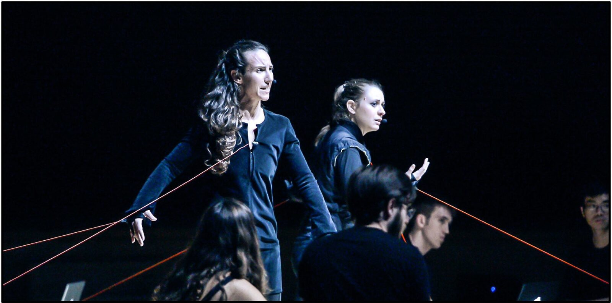
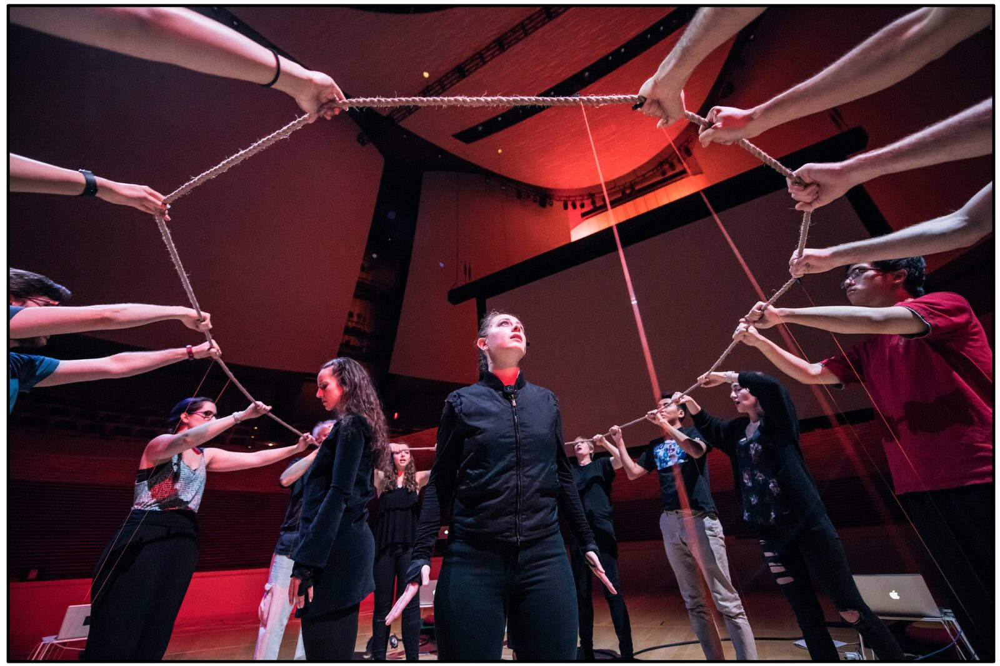
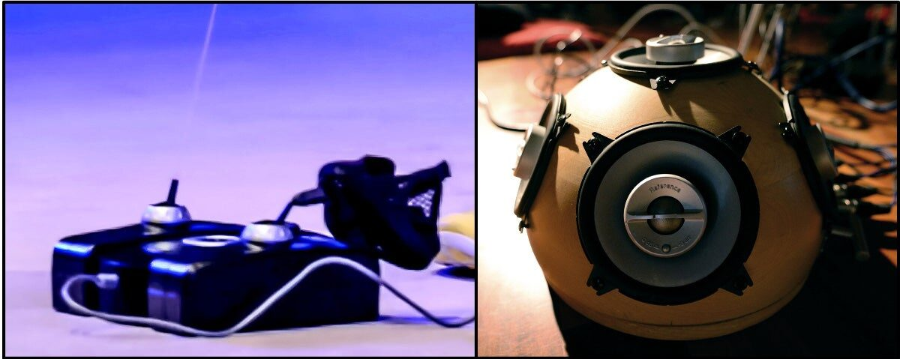
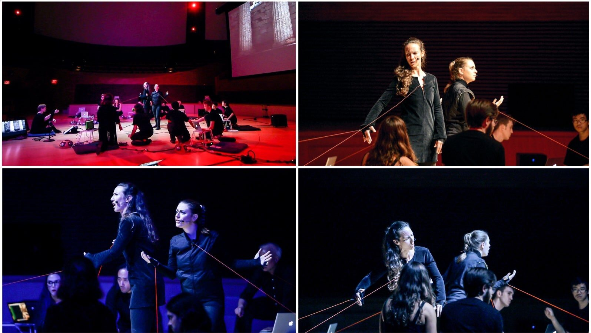
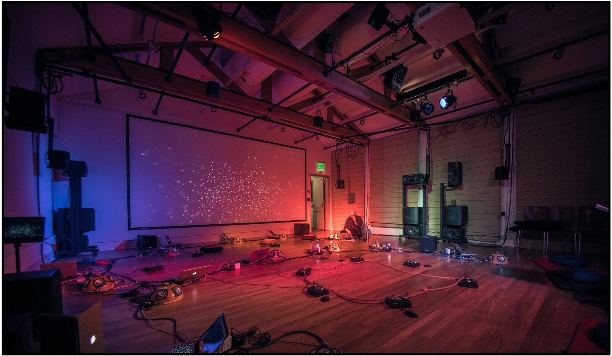

Instrument Design for The Furies: A LaptOpera
Abstract
In this article, we discuss the creation of The Furies: A LaptOpera, a new opera for laptop orchestra and live vocal soloists that tells the story of the Greek tragedy Electra. We outline the principles that guided our instrument design with the aim of forging direct and visceral connections between the music, the narrative, and the relationship between characters in ways we can simultaneously hear, see, and feel. Through detailed case studies of three instruments—The Rope and BeatPlayer, the tether chorus, and the autonomous speaker orchestra—this paper offers tools and reflections to guide instrument-building in service of narrative-based works through a unified multimedia art form.
Author Keywords
instrument building, opera, embodied metaphor, collective controllers, tether controllers, laptop orchestra
CCS Concepts
•Applied computing → Sound and music computing; Performing arts;


Figure 0. The Furies: A LaptOpera is a four-act laptop orchestra opera based on the Electra story.
Introduction
The Furies: A LaptOpera is an experiment in how to use instrument building to unify the expressive and performative vision of a multimedia work, specifically in the new medium of a laptop orchestra opera—a laptopera. The laptopera expands upon the multidisciplinary medium of the laptop orchestra [1][2] by incorporating live vocals, staging and setting into the instrumental design process in order to embody the societal questions posed by the opera’s narrative.
The Furies: A LaptOpera is a retelling of the Greek tragedy Electra. Blending a number of versions of the Electra story including works by Aeschylus, Sophocles, Euripides, and Jean Paul Sartre, this retelling explores central questions regarding how communities escape from cycles of violence, the role of guilt and shame in community identity, personal responsibility, how justice interfaces with cycles of violence, and redemption. The artistic medium of a laptop orchestra serves to recast the traditional instrumental role in a new kind of operatic medium (the laptopera) that reimagines the potential of instrument building to support dramatic elements and character relationships. The laptopera posits critical questions about technology in our lives presently, both in its promise to help us flourish and in its perils to perpetuate and amplify the existing cycles of violence in our world today.
The Furies: A LaptOpera began in the spring of 2019. Music and libretto composed by Anne Hege and performed by Stanford Laptop Orchestra (SLOrk)[3], The Furies: A Laptopera (Act III)[4] premiered in Bing Concert Hall on June 8 with vocal soloists Sidney Chen, Shauna Fallihee, and Alice del Simone. Six months later, on December 5 and 6, Act I was presented on the CCRMA stage, performed by SLOrk’s elite touring ensemble, SideLObe, with soloists Shauna Fallihee and Amy Foote. From January through early March 2020 the ensemble prepared for a full premiere that has been indefinitely postponed due to COVID-19. This paper presents our work so far in the production and performance of excerpts of this opera.
In this paper, we present case studies of three instruments designed for The Furies: The Rope and BeatPlayer instrumental parts in “Glorious Guilt,” the tether chorus in “Don't Sh Stop Please,” and the autonomous orchestra in “The Castle.” This paper details the construction of these instruments, the iterative process of creation, the role of rehearsal and performance in this process. Finally, we offer some reflections and takeaways on instrument design for laptopera.
Motivation
The Furies: A LaptOpera was conceived to explore the use of embodied metaphors as unifying threads between the different disciplines present in opera[5]. Using ideas from embodied cognition theory, which suggests that physical experience determines the metaphors that we use to communicate meaning[6], The Furies is composed around three specific metaphors: gravity as guilt and responsibility, cyclic momentum (e.g., a whirlpool) as societal pressure leading to cycles of action, and lack of gravity as freedom and detachment. The three metaphors, drawn from essential questions posed in the narrative, are reinforced by instrument design, musical composition, choreography, libretto, and live video elements. In writing this opera for laptop orchestra, instrument building serves as a starting point for the application of embodied metaphors. As we show through our case studies, metaphor guides the design of instruments that reinforce the work's expressive goals, allowing for a visceral and full immersion into the drama while posing moral questions essential to the human experience.
Using these embodied metaphors as a conceptual starting point, we draw on Perry Cook’s "Principles for Designing Computer Music Controllers," [7] to help guide the instrument design. For example, taking inspiration from Cook’s “instant music, subtlety later” ethos, we begin creating instruments that are immediately playable and something that one can perfect through practice. Along this vein, we also take into account several principles from artful design [8], paying special attention to the aesthetic considerations of the underlying interactions themselves, the physical body, and how we relate to the instruments we play not as a separate thing but as a unified whole—with the aim of crafting instruments and experiences with the capacity to induce the sublime.
Case Studies


Figure 1. The Furies ACT III Scene 1 “Glorious Guilt”. Surrounding the characters Electra and Orestia, the Furies control The Rope, an interdependent, multi-person instrument.
Case Study #1: The Rope as a collective instrument
Act III opens with Electra and Orestia standing inside a rope approximately twelve feet in diameter. The Furies crouch just outside the rope, ready to raise the rope and perform their ritual, “Glorious Guilt” (see fig. 1 above). The Rope is designed as a collective controller with two musical layers: chords and beat. Each layer is constructed as a separate instrument and played simultaneously through each laptop station. The rope is attached to six GameTrak Tether controllers (fig. 2a) spaced evenly around the rope. Each tether is attached to a laptop station (fig. 2b). Each tether controller sends information regarding the length (z axis) and location (x, y axis) of two tethers (6 axes of information) to its respective laptop. This location information determines the playback of various samples or sound synthesis depending on the instrument design. The sound is sent out from each laptop to an individual hemispherical speaker (and if necessary, subwoofer), so that each player has a unique-sounding, localized instrument.


Figure 2. (a) GameTrak Tether Controller and (b)Hemispherical Speaker with Subwoofer.
In crafting The Rope instrument, we want the physical language to make sense as a sounding language. The instrument design for the chord playing component mimics the rate of movement used when a string player bows their instrument—pull too fast or too slow and no chord will sound. Not only was this movement rate necessary to connote a sounding language, but it also requires the players to pay attention to their movement individually and collectively. All players must have a collective awareness of their rate of pulling and their change of direction. Using the ChucK programming language [9], the length and rate of change of the controller parameters triggers the playing of specific sound samples. There is no networking of the laptops for the chord component. All coordination between players is created through the collective, interdependent movement of the rope. This coordination takes practice. Over time, the SLOrk ensemble perfected the slow, even, unified pull needed to play the rope instrument successfully. The sound samples musically reinforce the harmony of the choral parts of this section, so that an upwards pull plays a C minor chord for the beginning of the phrase and a downward pull plays a G major chord during the repeating chorus in “Glorious Guilt.”
Metaphorically, the playing of The Rope has cultural and mythic significance denoting collective work, like unfurling a sail or rowing an oar on old Grecian boats. The instrument is also designed to capture the embodied metaphor of guilt as weight. Each chorus, the Furies raise the rope in a unison movement and slowly pull it down, as if repeatedly placing the burden of guilt on Electra and Orestia’s shoulders. In these ways, The Rope fulfills sounding requirements, musicality requirements (ensemble playing), metaphoric requirements, and dramatic or narrative requirements within its construction.
The instrumentation in “Glorious Guilt” is made more complex by adding in a rhythmic component called BeatPlayer. Designed as a second instrument to be played by each player simultaneously, BeatPlayer uses ChucK files that are networked to a constant pulse controlled by a server computer. The BeatPlayer instrument has three variations using different percussive samples, timings, feedback, and delay. The delay amounts of each variation shift over time so that the rhythmic component is rich and always changing. The automated random variation of delay creates surprising rhythmic textures in real time. These three variations are spatialized over six stations. Beyond the automated instrument changes, players control volume and, through volume, collective panning in real time. Using the tether controllers, where the left x-axis is volume: movement forward or into the circle brings volume to 0, and movement away from the center linearly brings the volume to one. The players’ control of volume allows for performative live panning. As the rope rotates towards one side and passes beyond center in any one direction, the volume increases. Through practice, the ensemble was able to perfect a kind of Ouija board-like playing where the rope could communally move around the outskirts of center, panning the beat as it went. The form of the song allows for sections of live movement improvisation where this panning is highlighted.
The song form also gradually introduces The Rope and BeatPlayer instruments to the audience. “Glorious Guilt” begins with the main refrain or chorus, sung a cappella, by a trio of Furies. At the end of the refrain, all the Furies (laptop orchestra players) rise in unison, lifting The Rope to sound a chord, and vocally joining a repeat of the chorus. This is followed by a verse where the rope is still. At the end of the verse, a server computer cues the BeatPlayer instrument, and the rope players continue playing the chord progression with no singing in time with the added beat. This moment adds in a new element and gives the audience time to listen and watch how the BeatPlayer works. With a cue, the singing returns, and the song continues chorus-chorus-verse-chorus-chorus-chorus-coda. The basic song form creates something familiar and, with the repetition, supports the ritualistic drama while allowing time for the audience to become acquainted with the instruments and action.
Finally, through rehearsal and performance, we continue to build nuance into the Rope and BeatPlayer instruments via both changes to the instrument design, and through the practice of extended movement that supports virtuosic ensemble interaction at the rope. Through both performer practice and iterating on responsive instrument design, we endeavor to develop work that is compelling, surprising, engrossing, and musical.
Case Study #2: Tether Chorus and the weight of guilt


Figure 3. In the scene, “Don’t Sh Stop Please”, the GameTrak tethers serve the dual purpose of musical and physical interface, with the latter manifesting the burden of guilt over time, as seen in this sequence.
As “Glorious Guilt” comes to an end, the Furies attach the tether lines to Orestia and Electra's wrists and chest, a manifestation of the Furies’ hold on them through the guilt that they feel. Here, the tethers play a sonic, visual, and dramatic role. The instrument is designed to create a dramatic task for the Furies chorus. They must pull their tethers, on cue, to change the pitch of their station and thus create the musical texture that supports the vocal line. Simultaneously, they physically pull Electra and Orestia closer and closer to the ground, ready to devour them.
Each laptop station independently controls one note of a six-note chord. The instrument is designed so that the right tether determines pitch. The pitch changes are pre-programmed so that at a change in velocity triggered by a strong tug on the tether, the next pitch is played. The left tether controls volume (z axis) and vibrato (x axis). The tones are kept simple, plain sine tones with reverb. Playing this instrument has some simple musical guidelines. Vibrato creates a warm and living sound, while volume emphasizes pitch change. Specifically, the players were instructed to place an accent, or short increase in volume, at the moment of pitch change. Pitch changes are rhythmic and intended to happen directly on the downbeat. There is no server controlling a master beat.
In support of the embodied metaphor of guilt as weight, both the vocal lines and the tether pitches descend over the course of the duet, collapsing at the end into a low cluster chord. Electra and Orestia physically reinforce this descent with the descent of their bodies, dictated by the pull of each tether. In this way, the instrument design, through the lens of the embodied metaphor, unifies sonic, visual, character, and choreographic elements to support the underlying themes of the narrative.
Case Study #3: Autonomous Orchestra and the Sounding of a Space


Figure 4. The Castle’s autonomous speaker orchestra creates both a sonic architecture and a disembodied sonic character for the scene.
Our third case study jumps backward in the opera to the last scene of Act II. The setting has changed for the first time in the opera from an outdoor space to an enclosed space: a cold, haunted yet desolate castle. The sonic goals in this scene differ drastically from those previous. In contrast to the two aforementioned case studies, where the choreography and staging drive synthesis of sound, The Castle provides the set for the scene. Unlike these other instruments, this instrument establishes space as a central character in the narrative.
We design The Castle to function as an autonomous speaker orchestra realizing a score. The score dictates a pre-determined chordal progression, meter, and rhythmic pattern. It is loosely structured into sections driven by narrative development, but the variation of harmonic content only narrowly changes throughout this fourteen minute piece. This repetition of harmonic content reinforces the perpetuation of cycles of guilt and shame held by the royal family living in the castle. Within this framework, this sonic architecture supports two character-driven sound sources: live processing of phrygian vocal improvisation by ghost characters Agamemnon and Iphigenia and, over this, the vocal duet between Aegisthus and Clytemnestra as they grapple with their life choices and the limited future before them.
A ChucK server acts as the conductor and five laptop stations act as independent orchestral "players.” The stations are positioned in a semicircular arc around the back of the stage and runs its own ChucK script. At the opening of the piece, the conductor sends BPM and meter information to each station. At each chord onset, the conductor transmits the current chord duration and set of notes. Each station receives and sonifies a single note from the set, effectively splitting and spatializing the chord across the stage.
The audience is meant to feel a sense of auditory claustrophobia created by the spatialization of the reverberant chords. Each station locally synthesizes a sawtooth oscillator at the given pitch, and passes this into a lowpass filter followed by a reverberator. Two filter parameters, the cutoff frequency and filtered/unfiltered ratio mix, change continuously, slowly and randomly, causing the onset of each note to materialize differently. This disassociation of timbral shift from harmonic shift subtly violates listener expectation, creating an ebb and flow of timbre that is disjunct from harmonic progression, propelling forward an otherwise cyclic and stagnant sound.
Two stations positioned at opposite sides of the semicircular arc spatialize the percussive elements of the piece. Percussive samples used in “Glorious Guilt” are introduced here, but the rhythmic pattern and delay remain constant within each section of the score. The conductor transmits BPM and meter to each percussion station at the onset of the piece, followed by duration and rhythmic pattern at section onsets. Each percussion station’s master gain oscillates at its own slow frequency. Throughout the piece, the two sinusoidal gain trajectories transition in and out of phase with each other. These phase transitions are intentionally misaligned with the structure of the score. This creates a sense of rhythmic spatialization that is ever-changing and unpredictable. The fleeting moments of dynamic alignment fade as quickly as they come, lacking resolution and thus sonifying The Castle’s history of unresolved violent acts.
Reflections and Takeaways
The nature of electronic instruments allows us to specifically design direct and visceral connections between the music, the narratives, and the relationship between characters in ways we can simultaneously hear, see, and feel, reinterpreting the Wagnerian concept of opera as “total art” in the context of a computer-mediated performance ensemble. Through the creation, practice, and performance of The Furies: A LaptOpera, we reflect upon the ways that instrument design inspires media elements to grow together.
Metaphor
Retracing our steps to reflect on the process, the experiment began by defining the primary questions present in the narrative, in this case, how do we define and enforce justice for a violent act and how do we find redemption. As a team, we determined which embodied metaphors physicalize these questions. We designed instruments, composed music, and wrote text to reinforces these metaphors. The opening of Act III demonstrates this multifaceted reinforcement of weight as guilt. The audience hears the weight of guilt through the descending melodic line sung by the Furies. The text alludes to gravity, repeating, "Glorious guilt that drips down." Simultaneously, the audience sees the physical pulling of the collective musical instrument, The Rope, downward in a visual reinforcement of weight and descent. The metaphor of guilt as weight is further developed in Act III, scene two, when Orestia and Electra sing “Don’t Sh Stop Please.” In this duet, the weight of guilt pulls Orestia and Electra to the ground as their vocal lines descend into the low cluster of the tether chorus. In our third case study of The Castle, the primary metaphor is conservation of momentum as societal pressure or pull. This can be understood physically as the pull of a whirlpool; something in motion stays in motion or its inverse. This metaphor is composed through the musical material and the cycling of harmonic material. The autonomous speaker orchestra of The Castle repeats the same harmonic material over and over, unable to break out of its own cycle. The repetition is a kind of stasis and this is enhanced by the feeling of enclosure created by the disembodied tone generation that is unable to escape the bounds of the castle walls and reverberates endlessly, trapped. This environment also supports the guilt as weight metaphor present in the melodic material of the live processed vocals and solo lines. Based on the phrygian mode where the second degree leading tone resolves down by half step (pull with gravity) to the tonic, the processed vocal improvisations and vocal duet continually reinforce a feeling of pull and weight derived from this scale.
Craft
Using these metaphors as a starting point, we found there was still much to craft in the opera and that these points of craft might be useful to others. In “Glorious Guilt,” we see the importance of balancing surprise or novelty with expectation. Subtle violation of expectation keeps people listening, looking, and engaged. (Too much surprise and the audience may become insecure or confused. Too little surprise leads the audience to become bored and disengaged.) When working with new performance mediums, such as the laptop orchestra, we found that it was important to be sensitive to what is visually and sonically novel for the audience. It is incumbent upon the creators to guide the audience to find their bearings with both the musical material and the way in which performers interact with instruments. Introduction of new material is followed by a period of time to hypothesize about what is happening, allowing the audience time to acclimate to the new. In “Glorious Guilt,” we purposefully elongated the form to allow for a slow introduction of instrument elements to allow the audience space for curiosity and comfort with something new.
The craft of the instrument design and composition must also fulfill the needs of the players. Returning to one of our first tenants, “subtlety later,” a good instrument inspires virtuosity and risk. The presence of risk allows for the players to be hyperaware of the present. In “Glorious Guilt,” risk and virtuosity are approached in the choreography of playing The Rope. Through three separate performances of this song, each months apart, the ensemble was, over time, able to approach virtuosic playing where the Furies vigorously pulled on the rope around the circle, allowing the rope to support their weight and trusting that the ensemble would hold the rope taut, allowing for both aggressive panning and a compelling, risky choreography of bodies fully bending backwards as The Rope undulates around the circle. This in-the-moment virtuosity must be balanced by reliability and the realities of limited rehearsal time. As the laptopera medium advances, composers will need to consider how to create satisfying musical surprise and the potential for virtuosity with or without extensive practice, repetition, and repeated performance.
Crafting purposeful, meaningful tasks in performance can be an effective way to help non-actors successfully perform onstage. Creating task through instrument design is one way to support successful and compelling performance. In “Don’t Sh Stop Please,” the Furies act through the instruments. They physically pull Orestia and Electra to the ground with sharp tugs on the tethers. These sharp tugs cue the musical pitch changes and embody the antagonistic relationship between the Furies and their captives, Electra and Orestia. In this scene, the Furies anxiously wait, hands circling, creating a menacing vibrato. They listen intently for the moment when Orestia and Electra fall from Apollo's altar and become their victims. They listen musically and work to balance the sine tone chord, bringing out dissonance, crescendoing into pitch change, and musically supporting the tension of the duet between the soloists through rate of vibrato and dynamic nuance. The clarity of task achieved through the instrument design allows non-actors to focus on musical responsibilities and through this focus, fulfill not only the musical role, but also the dramatic role.
Composing the environment is a powerful way to utilize the malleable nature of networked electronic instruments. The laptopera, and The Castle in particular, uses sound to realize not just the characters and the narrative, but the environment that contains and constructs the characters and their actions. Utilizing the spatialization and orchestration potential of the laptop orchestra, the composer can craft a compelling environment that not only presents the environment to the audience, but also makes real the space for the soloists, enlivening their performance and evoking a true physical response to environmental elements. The Castle uses phasing, reverberation, spatialization, and timbral and dynamic shifts to create an environment of disorientation and unease, both for the performers and the audience. By composing the space, we invite the audience to join the performers within the environment of action.
Conclusions
Instrument design provides an opportunity to support and deepen narrative and character development in opera. The case studies presented in this paper discuss instruments realized via group and individual physicality as well as via autonomous orchestra. Each case study highlights how thoughtful instrument design can not only reinforce, but transform stories through embodied and visceral enactment onstage. Design that considers how to simultaneously support the performers, audience, and narrative content of the opera paves the path for a new kind of immersive art, one that can inspire new kinds of physical and emotional engagement, conversation, and public discourse.
Acknowledgments
Our thanks to all performers of The Furies: A Laptopera including SLOrk 2019 (Munira Alimire, Hassan Estakhrian, Ben Gaiarin, Hillary Hermawan, Kunwoo Kim, Mark Sabini, Ryan Smith, Cara Turnbull, Jack Atherton, Trijeet Mukhopadhyay), SideLObe 2019 (Raul Altosaar, Andrea Baldioceda, Madeline Huberth, Mike Mulshine), Sidney Chen, Shauna Fallihee, Alice Del Simone, Catie Cuan, Amy Foote, Monica Covitt, Matt Wright, Curtis Ullerich, Nette Worthy, Brendan Larkin, Constantine Basica, David Kerr, and the CCRMA community.
Compliance with Ethical Standards
Anne Hege was a CCRMA funded Visting Artist (2019-2020). Anne Hege received a New Music USA Project Grant (2019) for the premiere of Act III.
No potential conflicts of interest (financial or non-financial)
Informed consent if the research involved human participants - Yes
No animals were involved in this research
Citations
Trueman, D. 2007. “Why a Laptop Orchestra?” Organised Sound. 12(2):171-179.
↩Smallwood, S., D. Trueman, P. R. Cook, and G. Wang. 2008. "Composing for Laptop Orchestra." Computer Music Journal. 32(1):9-25.
↩Wang, G., N. Bryan, J. Oh, and R. Hamilton. 2009. "Stanford Laptop Orchestra (SLOrk)." In Proceedings of the International Computer Music Conference. Montreal.
↩Link to video documentation of the premiere of Act III of The Furies, A LaptOpera (https://youtu.be/NScHznvVxrw).
↩Hege, A., 2014. Spirit in the Flesh: Essays on the Relationship between the Body and Meaning in Performance (Publication No. 3626690) [Doctoral Dissertation, Princeton University] ProQuest Dissertations Publishing.
↩Johnson, M., 2007. The Meaning of the Body: Aesthetics of Human Understanding. The University of Chicago Press.
↩Cook, P.R., 2001. "Principles for Designing Computer Music Controllers," In Proceedings of New Interfaces for Musical Expression.
↩Wang, G. 2018. Artful Design: Technology in Search of the Sublime. Stanford University Press.
↩Wang, G., P. R. Cook, S. Salazar. 2015. "ChucK: A Strongly-timed Computer Music Language." Computer Music Journal. 39(4):10-29.
↩